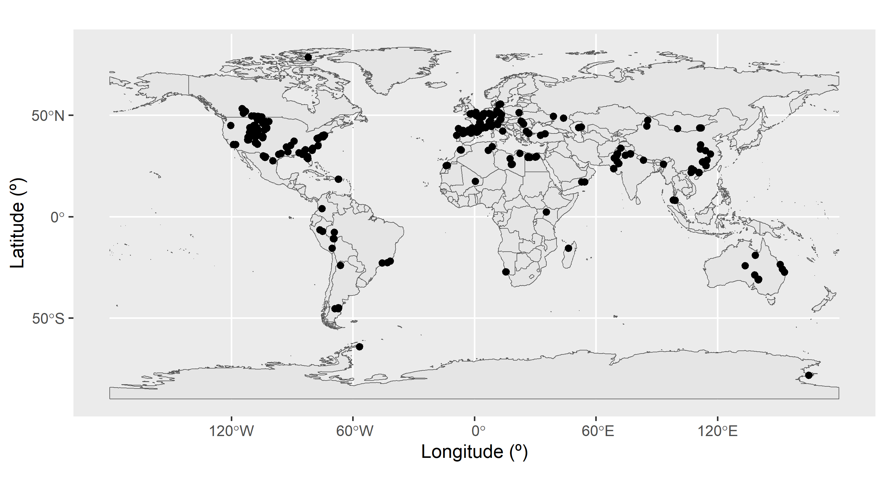

Ten simple rules to follow when cleaning occurrence data in palaeobiology
Introduction
This vignette is an accompaniment to: Jones LA, Dean CD, Allen BJ, Drage HB, Flannery-Sutherland JT, Chiarenza AA, Dillon EM, Farina BM, Gearty W, Godoy PL. Ten simple rules to follow when cleaning occurence data in palaeobiology.
Here we present a full example workflow that complies with the ten rules we propose in the manuscript. The intention is to illustrate the concepts outlined in the manuscript, with further details and ideas for practical implementation, as well as code that can be repurposed by readers.
Load packages
Before starting, we will load all of the R packages we need.
Code
# install.packages(c("CoordinateCleaner", "deeptime", "dplyr", "fossilbrush",
# "ggplot2", "palaeoverse", "readr", "rgplates", "rnaturalearth",
# "rnaturalearthdata"))
library(CoordinateCleaner)
library(deeptime)
library(dplyr)
library(fossilbrush)
library(ggplot2)
library(palaeoverse)
library(readr)
library(rgplates)
library(rnaturalearth)
library(rnaturalearthdata)Rule 1: Choose the right data for your question
In this example, we are interested in the fossil record of crocodiles. As ectotherms, crocodiles are highly reliant on the environment in which they live in order to maintain a functional internal body temperature. Because of this, their spatial distribution is constrained to warm climates, so their fossil record is commonly used as an indicator of palaeoclimate. Here we will investigate the palaeodiversity of crocodiles, with the specific goal of reconstructing their latitudinal range throughout the Paleogene.
To meet this goal, we need to acquire occurrence data for fossil crocodiles during the Paleogene. Initially we have decided not to place further taxonomic constraints on our search, so we will include all occurrences belonging to the order ‘Crocodylia’. We are interested in the clade’s biogeography, so we will need all occurrences globally, and we need to ensure that we have geographic coordinates associated with our occurrences.
We will turn to one of the largest sources of fossil occurrence data, the Paleobiology Database. We opted to download our data by completing the ‘Download’ form on the Paleobiology Database website. Practically, this uses the options entered into the form to create a call to the database’s API (application programming interface), and then enacts this call. More information about the API service can be found here.
For our dataset, we pulled all occurrences associated with the taxon name ‘Crocodylia’, dated to the ‘Paleogene’. All other settings were left at default. We obtained the standard (or recommended) data fields by checking the box to “Include all output blocks whose names are boldfaced below”, and obtained our data in the form of a ‘.csv’ file. We will see later in the vignette what this means in terms of what is contained within the dataset.
Rule 2: Keep raw data raw
For reproducibility, we want to make sure that we have a copy of the full dataset as initially downloaded - this is the “raw” data. Automatically, when we use the online form, there is an output option checked which is labelled “Include metadata at the beginning of the output”. This ensures that the raw data file includes a metadata ‘header’, which contains useful information linked to the dataset.
We can load and view the metadata to see what it includes.
## Warning: One or more parsing issues, call `problems()` on your data frame for details,
## e.g.:
## dat <- vroom(...)
## problems(dat)## # A tibble: 23 × 2
## `Data Provider` `The Paleobiology Database`
## <chr> <chr>
## 1 Data Source The Paleobiology Database
## 2 Data License Creative Commons CC0
## 3 License URL https://creativecommons.org/publicdomain/zero/1.0/
## 4 Documentation URL http://paleobiodb.org/data1.2/occs/list_doc.html
## 5 Data URL http://paleobiodb.org/data1.2/occs/list.csv?datainfo&rowco…
## 6 Access Time Fri 2025-02-21 14:41:31 GMT
## 7 Title PBDB Data Service
## 8 Parameters: <NA>
## 9 <NA> base_name,Crocodylia
## 10 <NA> pgm,gplates,scotese,seton
## # ℹ 13 more rowsThe metadata are strangely formatted here, but we can see that they include information about the data license (CC0), the API call used (under the label ‘Data URL’), the date and time at which the data were accessed, and the total number of records contained within the dataset (here, 886 fossil occurrences).
These metadata elements are all important information to retain alongside our data, allowing others to better understand what the dataset contains, and when and how it was downloaded. The Paleobiology Database is fully dynamic, not only in that new data is continually being added, but also in that any record can be changed retrospectively by an Editor. It cannot be assumed that the ‘present’ state of any data record was the same in the (historical) past. So, for example, if someone wanted to see how the data associated with this API call had changed in the time elapsed since our download, they could do this, and directly in R if desired:
## # A tibble: 1 × 1
## `The Paleobiology Database`
## <chr>
## 1 http://paleobiodb.org/data1.2/occs/list.csv?datainfo&rowcount&base_name=Croco…While the metadata is important to keep in the raw file, for the purposes of analysis, we want to be able to just read in the data beneath it. We can do this using the skip parameter in read_csv, which tells R to ignore a given number of rows at the top of the file.
## New names:
## Rows: 886 Columns: 131
## ── Column specification
## ──────────────────────────────────────────────────────── Delimiter: "," chr
## (95): record_type, flags, identified_name, identified_rank, difference, ... dbl
## (20): occurrence_no, reid_no, collection_no, identified_no, accepted_no,... lgl
## (16): accepted_attr, plant_organ, plant_organ2, regionalbedunit, artifac...
## ℹ Use `spec()` to retrieve the full column specification for this data. ℹ
## Specify the column types or set `show_col_types = FALSE` to quiet this message.
## • `cc` -> `cc...36`
## • `cc` -> `cc...58`When we use read_csv(), we get a message explaining how the data have been parsed into R. It’s worth checking this for anything unusual, because if parsing has not occurred how we expected, it could lead to errors in the data. Here, we can see that there were two columns in the csv file named “cc”, for “country code”. Their column number has been appended to their column name, in order to keep these distinct. Is this column simply duplicated? We can check this.
## [1] TRUEThis is true, so to keep our dataframe tidy, we will remove one of these columns and rename the other.
Code
And now we are ready to commence our data exploration and cleaning.
Rule 3: Document your workflow
Documenting your workflow is essential for ensuring that others can understand and replicate all steps. Using programming languages such as R or Python makes this easy, as the code used can be provided alongside the data. Our vignette gives an example of how markdown can be a particularly useful tool for integrating code with prose, ensuring that everything is fully explained, and providing plots integrated within the text when exported.
Our tips for good documentation in R include:
- Following general guidelines for good coding, such as ample use of spacing to help human readability - Having a clear, overarching code structure (such as subsections, which can be denoted with headings and “#====” notation, and an order which corresponds to the flow of the research methods/results)
- Using logical yet short variable names
- Including comments throughout which explain both what and why
Rule 4: Explore your data
The first thing we want to do with our data is explore it - that is, generate summary statistics and plots to help us understand the data and its various characteristics.
For example, we can look at the distribution of identification levels for our fossils.
##
## family genus species subfamily superfamily
## 1 254 250 3 13
## unranked clade
## 365##
## family genus species subfamily superfamily
## 0.1128668 28.6681716 28.2167043 0.3386005 1.4672686
## unranked clade
## 41.1963883We can see that of our 886 occurrences, 250 (28%) are identified to species level. A further 254 (29%) are identified to genus level. The remaining fossils are more coarsely identified, including 365 (41%) which are identified to the mysterious level of “unranked clade”.
Next, let’s look at the distribution of fossils across localities. In the PBDB, fossils are placed within collections, each of which can roughly be considered a separate locality (they can also represent different sampling horizons at the same locality; more on this later). First, we can count the number of unique collection_no values to find out how many unique collections are in the dataset.
Code
## [1] 720Our dataset contains 720 unique collections. We can also create a plot showing us the distribution of occurrences across these collections.
Code
We can see that the collection containing the most occurrences has 7, while the vast majority only contain a single occurrence.
What about the countries in which these fossils were found? We can investigate this using the “cc”, or “country code” column.
## [1] "US" "CA" "PE" "IN" "FR" "MA" "BE" "RU" "AR" "ES" "UK" "DE" "KZ" "LY" "IT"
## [16] "BR" "AU" "PK" "JM" "EG" "AA" "TR" "CZ" "MG" "CN" "DK" "SE" "UA" "PL" "PR"
## [31] "TH" "TN" "VN" "KE" "AT" "OM" "PT" NA "CH" "EH" "ML" "RO" "NP" "MN" "BG"
## [46] "CO"## [1] 46Here we can see that Paleogene crocodiles have been found in 46 different countries. Let’s sort those values alphabetically to help us find specific countries.
## [1] "AA" "AR" "AT" "AU" "BE" "BG" "BR" "CA" "CH" "CN" "CO" "CZ" "DE" "DK" "EG"
## [16] "EH" "ES" "FR" "IN" "IT" "JM" "KE" "KZ" "LY" "MA" "MG" "ML" "MN" "NP" "OM"
## [31] "PE" "PK" "PL" "PR" "PT" "RO" "RU" "SE" "TH" "TN" "TR" "UA" "UK" "US" "VN"## [1] 45Something weird has happened here: we can see that once the countries have been sorted, one of them has disappeared. Why? We will come back to this during our next rule.
Rule 5: Identify and handle incomplete data records
By default, when we read data tables into R, it recognises empty cells and takes some course of action to manage them. When we use base R functions, such as read.csv(), empty cells are given an NA value (‘not available’) only when the column is considered to contain numerical data. When we use Tidyverse functions, such as readr::read_csv(), all empty cells are given NA values. This is important to bear in mind when we want to find those missing values: here, we have done the latter, so all empty cells are NA.
The extent of incompleteness of the different columns in our dataset is highly variable. For example, the number of NA values for the collection_no is 0.
Code
## [1] 0This is because it is impossible to add an occurrence to the PBDB without putting it in a collection, which must in turn have an identification number.
However, what about genus?
## [1] 382The value here is 382. This corresponds to the number of occurrences in our dataset which cannot be placed in a genus, i.e. their taxonomic identification is to a coarser taxonomic level.
What can, or should, we do about this? It depends heavily on the intersection between the different fields in the dataset, and our research question. In some instances it might be appropriate to ignore certain NA values: for example, NA values for genus might not matter if we want to see the spatial distribution of all crocodylian fossils, regardless of how coarsely identified they are.
Alternatively, it might be appropriate to filter these values out. For our crocodile example, we are interested in biogeography, so the latitude and longitude, and palaeolatitude and palaeolongitude, are pretty important. Do we have missing values there?
Code
## [1] 0## [1] 0## [1] 18## [1] 18While all occurrences have modern day coordinates, 18 are missing palaeocoordinates. We will now remove these 18 occurrences from the dataset.
Code
## [1] 0## [1] 0A further option applicable in some cases would be to fill in our missing data. We may be able to interpolate values from the rest of our data, or use additional data sources. For our palaeogeography example above, we could generate our own coordinates, for example using palaeoverse::palaeorotate().
Let’s revisit our country example from Rule 5. Does our list of country codes contain NAs?
## [1] 2Our test tells us that two of the values are NA: when we asked R to sort the values, it removed NA from the list of unique countries. However, the PBDB has set the country within which the collection is located as a compulsory entry field. How can we have missing data here? We don’t: these values are not NA, they are “NA” meaning Namibia, and have been misconstrued by R. This is an important illustration of why we should conduct further investigation when any apparent errors arise in the dataset, rather than immediately removing these data points.
Rule 6: Identify and handle outliers
Next, we want to look for outliers. Here we will focus in on the specific variables which relate to our scientific question, i.e. the geography of our fossil occurrences. First we’ll plot where the crocodile fossils have been found across the globe: how does this match what we already know from the country codes?
Code

We have a large density of crocodile occurrences in Europe and the western interior of the United States, along with a smattering of occurrences across the other continents. This distribution seems to fit our previous knowledge, that the occurrences are spread across 46 countries. However, the crocodile occurrences in Antarctica seem particularly suspicious: crocodiles need a warm climate, and modern-day Antarctica certainly doesn’t fit this description. Let’s investigate further. We’ll do this by plotting the latitude of the occurrences through time.
Code
# Add a column to the data frame with the midpoint of the fossil ages
fossils <- mutate(fossils, mid_age = (min_ma + max_ma) / 2)
# Create dataset containing only Antarctic fossils
Antarctic <- filter(fossils, cc == "AA")
# Plot the age of each occurrence against its latitude
ggplot(fossils, aes(x = mid_age, y = lat)) +
geom_point(colour = "black") +
geom_point(data = Antarctic, colour = "red") +
labs(x = "Age (Ma)",
y = "Latitude (º)") +
scale_x_reverse() +
geom_hline(yintercept = 0) +
coord_geo(dat = "stages", expand = TRUE)Here we can see the latitude of each occurrence, plotted against the temporal midpoint of the collection. We have highlighted our Antarctic occurrences in red - these points are still looking pretty anomalous.
But, wait, we should actually be looking at palaeolatitude instead. Let’s plot that against time.
Code
# Plot the age of each occurrence against its palaeolatitude
ggplot(fossils, aes(x = mid_age, y = paleolat)) +
geom_point(colour = "black") +
geom_point(data = Antarctic, colour = "red") +
labs(x = "Age (Ma)",
y = "Palaeolatitude (º)") +
scale_x_reverse() +
geom_hline(yintercept = 0) +
coord_geo(dat = "stages", expand = TRUE)Hmm… when we look at palaeolatitude the Antarctic occurrences are even further south. Time to really check out these occurrences. Which collections are they within?
## [1] 43030 120887 31173Well, upon further visual inspection using the PBDB website, all appear to be fairly legitimate. However, all three occurrences still appear to be outliers, especially as in the late Eocene temperatures were dropping. What about the taxonomic certainty of these occurrences?
## [1] "Crocodilia indet." "Crocodylia indet." "Crocodylia indet."Since all three occurrences are listed as “Crocodylia indet.”, it may make sense to remove them from further analyses anyway.
Let’s investigate if there are any other anomalies or outliers in our data. We’ll bin the occurrences by stage to look for stage-level outliers, using boxplots to show us any anomalous data points.
Code
# Put occurrences into stage bins
bins <- time_bins(scale = "international ages")
fossils <- bin_time(occdf = fossils, bins = bins,
min_ma = "min_ma", max_ma = "max_ma", method = "majority")
# Add interval name labels to occurrences
bins <- select(bins, bin, interval_name)
fossils <- left_join(fossils, bins, by = c("bin_assignment" = "bin"))
# Plot occurrences
ggplot(fossils, aes(x = bin_midpoint, y = paleolat, fill = interval_name)) +
geom_boxplot(show.legend = FALSE) +
labs(x = "Age (Ma)",
y = "Palaeolatitude (º)") +
scale_x_reverse() +
scale_fill_geo("stages") +
coord_geo(dat = "stages", expand = TRUE)Box plots are a great way to look for outliers, because their calculation automatically includes outlier determination, and any such points can clearly be seen in the graph. At time of writing, the guidance for geom_boxplot() states that “The upper whisker extends from the hinge to the largest value no further than 1.5 * IQR from the hinge (where IQR is the inter-quartile range, or distance between the first and third quartiles). The lower whisker extends from the hinge to the smallest value at most 1.5 * IQR of the hinge. Data beyond the end of the whiskers are called ‘outlying’ points and are plotted individually.” 1.5 times the interquartile range seems a reasonable cut-off for determining outliers, so we will use these plots at face value to identify data points to check.
Here, the Ypresian (“Y”) is looking pretty suspicious - it seems to have a lot of outliers. Let’s plot the Ypresian occurrences on a palaeogeographic map to investigate further.
Code
# Load map of the Ypresian, and identify Ypresian fossils
fossils_y <- fossils %>%
filter(interval_name == "Ypresian")
world_y <- reconstruct("coastlines", model = "PALEOMAP", age = 51.9)
# Plot localities on the Ypresian map
ggplot(fossils_y) +
geom_sf(data = world_y) +
geom_point(aes(x = paleolng, y = paleolat)) +
labs(x = "Palaeolongitude (º)",
y = "Palaeolatitude (º)")Aha! There is a concentrated cluster of occurrences in the western interior of North America. This high number of occurrences is increasing the weight of data at this palaeolatitude, and narrowing the boundaries at which other points are considered outliers. We can check the effect this is having on our outlier identification by removing the US occurrences from the dataset and checking the distribution again.
Code
We can now see that none of our occurrences are being flagged as outliers. Without this strong geographic bias towards the US, all of the occurrences in the Ypresian appear to be reasonable. This fits our prior knowledge, as elevated global temperatures during this time likely helped crocodiles to live at higher latitudes than was possible earlier in the Paleogene.
So to sum up, it seems that our outliers are not concerning, so we will leave them in our dataset and continue with our analytical pipeline.
Rule 7: Identify and handle inconsistencies
We’re now going to look for inconsistencies in our dataset. Let’s start by revisiting its structure, focusing on whether the class types of the variables make sense.
## tibble [868 × 137] (S3: tbl_df/tbl/data.frame)
## $ occurrence_no : num [1:868] 40163 40167 40168 40169 150323 ...
## $ record_type : chr [1:868] "occ" "occ" "occ" "occ" ...
## $ reid_no : num [1:868] 18506 NA NA NA NA ...
## $ flags : chr [1:868] NA NA NA NA ...
## $ collection_no : num [1:868] 3113 3113 3113 3113 13346 ...
## $ identified_name : chr [1:868] "Crocodylia indet." "Thoracosaurus basifissus" "Thoracosaurus basitruncatus" "Thoracosaurus neocesariensis" ...
## $ identified_rank : chr [1:868] "unranked clade" "species" "species" "species" ...
## $ identified_no : num [1:868] 38309 216615 216614 184628 38435 ...
## $ difference : chr [1:868] NA "nomen dubium" "nomen dubium" NA ...
## $ accepted_name : chr [1:868] "Crocodylia" "Gavialoidea" "Gavialoidea" "Thoracosaurus neocesariensis" ...
## $ accepted_attr : logi [1:868] NA NA NA NA NA NA ...
## $ accepted_rank : chr [1:868] "unranked clade" "superfamily" "superfamily" "species" ...
## $ accepted_no : num [1:868] 36582 96627 96627 184627 38435 ...
## $ early_interval : chr [1:868] "Thanetian" "Thanetian" "Thanetian" "Thanetian" ...
## $ late_interval : chr [1:868] NA NA NA NA ...
## $ max_ma : num [1:868] 59.2 59.2 59.2 59.2 47.8 54.9 66 66 63.8 54.9 ...
## $ min_ma : num [1:868] 56 56 56 56 41.2 50.5 61.6 61.6 60.9 50.5 ...
## $ ref_author : chr [1:868] "Alroy" "Cook and Ramsdell" "Cook and Ramsdell" "Cook and Ramsdell" ...
## $ ref_pubyr : num [1:868] 2006 1991 1991 1991 1988 ...
## $ reference_no : num [1:868] 18120 140 140 140 688 ...
## $ phylum : chr [1:868] "Chordata" "Chordata" "Chordata" "Chordata" ...
## $ class : chr [1:868] "Reptilia" "Reptilia" "Reptilia" "Reptilia" ...
## $ order : chr [1:868] "Crocodylia" "Crocodylia" "Crocodylia" "Crocodylia" ...
## $ family : chr [1:868] NA NA NA "Gavialidae" ...
## $ genus : chr [1:868] NA NA NA "Thoracosaurus" ...
## $ plant_organ : logi [1:868] NA NA NA NA NA NA ...
## $ plant_organ2 : logi [1:868] NA NA NA NA NA NA ...
## $ abund_value : num [1:868] NA NA NA NA 62 NA NA NA NA NA ...
## $ abund_unit : chr [1:868] NA NA NA NA ...
## $ lng : num [1:868] -74.7 -74.7 -74.7 -74.7 -86.5 ...
## $ lat : num [1:868] 40 40 40 40 31.4 ...
## $ occurrence_comments : chr [1:868] "originally entered as \"Crocodylus? sp.\"" NA NA NA ...
## $ collection_name : chr [1:868] "Vincentown Formation, NJ" "Vincentown Formation, NJ" "Vincentown Formation, NJ" "Vincentown Formation, NJ" ...
## $ collection_subset : num [1:868] NA NA NA NA NA NA NA NA NA NA ...
## $ collection_aka : chr [1:868] NA NA NA NA ...
## $ cc : chr [1:868] "US" "US" "US" "US" ...
## $ state : chr [1:868] "New Jersey" "New Jersey" "New Jersey" "New Jersey" ...
## $ county : chr [1:868] NA NA NA NA ...
## $ latlng_basis : chr [1:868] "estimated from map" "estimated from map" "estimated from map" "estimated from map" ...
## $ latlng_precision : chr [1:868] "seconds" "seconds" "seconds" "seconds" ...
## $ geogscale : chr [1:868] "local area" "local area" "local area" "local area" ...
## $ geogcomments : chr [1:868] "\"The Vincentown Fm. occurs in an irregular, narrow belt extending diagonally [NE-SW] across NJ through portion"| __truncated__ "\"The Vincentown Fm. occurs in an irregular, narrow belt extending diagonally [NE-SW] across NJ through portion"| __truncated__ "\"The Vincentown Fm. occurs in an irregular, narrow belt extending diagonally [NE-SW] across NJ through portion"| __truncated__ "\"The Vincentown Fm. occurs in an irregular, narrow belt extending diagonally [NE-SW] across NJ through portion"| __truncated__ ...
## $ paleomodel : chr [1:868] "gplates" "gplates" "gplates" "gplates" ...
## $ geoplate : chr [1:868] "109" "109" "109" "109" ...
## $ paleoage : chr [1:868] "mid" "mid" "mid" "mid" ...
## $ paleolng : num [1:868] -44.5 -44.5 -44.5 -44.5 -66.8 ...
## $ paleolat : num [1:868] 40.1 40.1 40.1 40.1 34.7 ...
## $ paleomodel2 : chr [1:868] "scotese" "scotese" "scotese" "scotese" ...
## $ geoplate2 : num [1:868] 109 109 109 109 109 101 101 101 133 101 ...
## $ paleoage2 : chr [1:868] "mid" "mid" "mid" "mid" ...
## $ paleolng2 : num [1:868] -55.1 -55.1 -55.1 -55.1 -75.5 ...
## $ paleolat2 : num [1:868] 40.1 40.1 40.1 40.1 32.4 ...
## $ paleomodel3 : chr [1:868] "seton" "seton" "seton" "seton" ...
## $ geoplate3 : chr [1:868] "101" "101" "101" "101" ...
## $ paleoage3 : chr [1:868] "mid" "mid" "mid" "mid" ...
## $ paleolng3 : num [1:868] -54 -54 -54 -54 -75.3 ...
## $ paleolat3 : num [1:868] 39.3 39.3 39.3 39.3 29.7 ...
## $ protected : chr [1:868] NA NA NA NA ...
## $ formation : chr [1:868] "Vincentown" "Vincentown" "Vincentown" "Vincentown" ...
## $ stratgroup : chr [1:868] NA NA NA NA ...
## $ member : chr [1:868] NA NA NA NA ...
## $ stratscale : chr [1:868] "formation" "formation" "formation" "formation" ...
## $ zone : chr [1:868] NA NA NA NA ...
## $ localsection : chr [1:868] "New Jersey" "New Jersey" "New Jersey" "New Jersey" ...
## $ localbed : chr [1:868] NA NA NA NA ...
## $ localbedunit : chr [1:868] NA NA NA NA ...
## $ localorder : chr [1:868] NA NA NA NA ...
## $ regionalsection : chr [1:868] NA NA NA NA ...
## $ regionalbed : chr [1:868] NA NA NA NA ...
## $ regionalbedunit : logi [1:868] NA NA NA NA NA NA ...
## $ regionalorder : chr [1:868] NA NA NA NA ...
## $ stratcomments : chr [1:868] NA NA NA NA ...
## $ lithdescript : chr [1:868] NA NA NA NA ...
## $ lithology1 : chr [1:868] "sandstone" "sandstone" "sandstone" "sandstone" ...
## $ lithadj1 : chr [1:868] "glauconitic" "glauconitic" "glauconitic" "glauconitic" ...
## $ lithification1 : chr [1:868] NA NA NA NA ...
## $ minor_lithology1 : chr [1:868] "sandy,calcareous" "sandy,calcareous" "sandy,calcareous" "sandy,calcareous" ...
## $ fossilsfrom1 : chr [1:868] NA NA NA NA ...
## $ lithology2 : chr [1:868] NA NA NA NA ...
## $ lithadj2 : chr [1:868] NA NA NA NA ...
## $ lithification2 : chr [1:868] NA NA NA NA ...
## $ minor_lithology2 : chr [1:868] NA NA NA NA ...
## $ fossilsfrom2 : chr [1:868] NA NA NA NA ...
## $ environment : chr [1:868] NA NA NA NA ...
## $ tectonic_setting : chr [1:868] NA NA NA NA ...
## $ geology_comments : chr [1:868] "lithology described as a calcareous \"lime sand\" interbedded with a quartz or \"yellow sand\"" "lithology described as a calcareous \"lime sand\" interbedded with a quartz or \"yellow sand\"" "lithology described as a calcareous \"lime sand\" interbedded with a quartz or \"yellow sand\"" "lithology described as a calcareous \"lime sand\" interbedded with a quartz or \"yellow sand\"" ...
## $ assembl_comps : chr [1:868] NA NA NA NA ...
## $ articulated_parts : chr [1:868] NA NA NA NA ...
## $ associated_parts : chr [1:868] NA NA NA NA ...
## $ common_body_parts : chr [1:868] NA NA NA NA ...
## $ rare_body_parts : chr [1:868] NA NA NA NA ...
## $ feed_pred_traces : chr [1:868] NA NA NA NA ...
## $ artifacts : logi [1:868] NA NA NA NA NA NA ...
## $ component_comments : chr [1:868] NA NA NA NA ...
## $ pres_mode : chr [1:868] NA NA NA NA ...
## $ preservation_quality : chr [1:868] NA NA NA NA ...
## $ spatial_resolution : chr [1:868] NA NA NA NA ...
## $ temporal_resolution : chr [1:868] NA NA NA NA ...
## $ lagerstatten : chr [1:868] NA NA NA NA ...
## [list output truncated]This looks reasonable. For example, we can see that our collection IDs are numerical, and our identified_name column contains character strings.
Now let’s dive in further to look for inconsistencies in spelling, which could cause taxonomic names or geological units to be grouped separately when they are really the same thing. We’ll start by checking for potential taxonomic misspellings.
We can use the table() function to look at the frequencies of various taxonomic names in the dataset. Here, inconsistencies like misspellings or antiquated taxonomic names might be recognised. We will check the columns family, genus, and accepted_name, the latter of which gives the name of the identification regardless of taxonomic level, and is the only column to give species binomials.
##
## Alligatoridae Crocodylidae Gavialidae NO_FAMILY_SPECIFIED
## 205 61 34 230
## Planocraniidae
## 24##
## Ahdeskatanka Akanthosuchus Aktiogavialis Alligator
## 1 3 1 17
## Allognathosuchus Argochampsa Asiatosuchus Asifcroco
## 129 3 32 1
## Astorgosuchus Australosuchus Baru Borealosuchus
## 2 3 8 49
## Bottosaurus Boverisuchus Brachychampsa Brachyuranochampsa
## 5 21 1 1
## Ceratosuchus Chinatichampsus Chrysochampsa Crocodylus
## 5 1 1 42
## Diplocynodon Dollosuchoides Dongnanosuchus Duerosuchus
## 65 1 1 1
## Dzungarisuchus Eoalligator Eocaiman Eogavialis
## 1 3 5 2
## Eosuchus Gavialosuchus Gryposuchus Hassiacosuchus
## 6 1 1 2
## Kambara Kentisuchus Krabisuchus Leidyosuchus
## 4 3 3 1
## Lianghusuchus Listrognathosuchus Maomingosuchus Maroccosuchus
## 2 1 4 3
## Megadontosuchus Mekosuchus Menatalligator Mourasuchus
## 1 3 1 1
## Navajosuchus Necrosuchus Nihilichnus Orientalosuchus
## 2 1 1 1
## Orthogenysuchus Paratomistoma Planocrania Procaimanoidea
## 1 1 2 5
## Protoalligator Protocaiman Purussaurus Qianshanosuchus
## 1 1 6 1
## Quinkana Thecachampsa Thoracosaurus Tienosuchus
## 1 12 11 1
## Tomistoma Trilophosuchus Tsoabichi Tzaganosuchus
## 4 1 2 1
## Ultrastenos Wannaganosuchus
## 2 1Code
##
## Ahdeskatanka russlanddeutsche Akanthosuchus langstoni
## 1 3
## Aktiogavialis puertoricensis Alligator darwini
## 1 2
## Alligator gaudryi Alligator hantoniensis
## 1 2
## Alligator prenasalis Allognathosuchus heterodon
## 8 2
## Allognathosuchus mlynarskii Allognathosuchus polyodon
## 1 2
## Allognathosuchus wartheni Allognathosuchus woutersi
## 4 1
## Argochampsa krebsi Asiatosuchus depressifrons
## 3 11
## Asiatosuchus germanicus Asiatosuchus grangeri
## 3 1
## Asiatosuchus nanlingensis Asiatosuchus oenotriensis
## 4 1
## Asifcroco retrai Astorgosuchus bugtiensis
## 1 2
## Australosuchus clarkae Baru darrowi
## 3 2
## Baru huberi Baru wickeni
## 1 5
## Borealosuchus acutidentatus Borealosuchus formidabilis
## 2 17
## Borealosuchus griffithi Borealosuchus sternbergii
## 2 12
## Borealosuchus wilsoni Bottosaurus fustidens
## 2 2
## Boverisuchus magnifrons Boverisuchus vorax
## 2 17
## Brachyuranochampsa eversolei Ceratosuchus burdoshi
## 1 4
## Chinatichampsus wilsonorum Crocodilus ziphodon
## 1 2
## Crocodylus aptus Crocodylus elliotti
## 2 1
## Crocodylus megarhinus Diplocynodon darwini
## 3 1
## Diplocynodon deponiae Diplocynodon elavericus
## 3 1
## Diplocynodon hantoniensis Diplocynodon kochi
## 1 4
## Diplocynodon levantinicum Diplocynodon muelleri
## 2 6
## Diplocynodon ratelii Diplocynodon remensis
## 2 2
## Diplocynodon tormis Dollosuchoides densmorei
## 4 1
## Dongnanosuchus hsui Duerosuchus piscator
## 1 1
## Dzungarisuchus manacensis Eoalligator chunyii
## 1 3
## Eocaiman cavernensis Eocaiman itaboraiensis
## 1 1
## Eocaiman palaeocenicus Eogavialis africanum
## 3 1
## Eogavialis gavialoides Eosuchus lerichei
## 1 1
## Eosuchus minor Gryposuchus jessei
## 5 1
## Hassiacosuchus haupti Kambara implexidens
## 1 1
## Kambara molnari Kambara murgonensis
## 1 1
## Kambara taraina Kentisuchus astrei
## 1 1
## Kentisuchus spenceri Krabisuchus siamogallicus
## 2 3
## Lianghusuchus hengyangensis Listrognathosuchus multidentatus
## 1 1
## Maomingosuchus acutirostris Maomingosuchus petrolica
## 1 2
## Maroccosuchus zennaroi Megadontosuchus arduini
## 3 1
## Mekosuchus whitehunterensis Menatalligator bergouniouxi
## 3 1
## Navajosuchus mooki Necrosuchus ionensis
## 2 1
## Nihilichnus nihilicus Orientalosuchus naduongensis
## 1 1
## Orthogenysuchus olseni Paratomistoma courtii
## 1 1
## Planocrania datangensis Planocrania hengdongensis
## 1 1
## Procaimanoidea kayi Procaimanoidea utahensis
## 2 1
## Protoalligator huiningensis Protocaiman peligrensis
## 1 1
## Qianshanosuchus youngi Quinkana meboldi
## 1 1
## Thecachampsa antiquus Thecachampsa carolinensis
## 1 7
## Thecachampsa marylandica Thecachampsa sericodon
## 2 1
## Thoracosaurus macrorhynchus Thoracosaurus neocesariensis
## 1 5
## Tienosuchus hsiangi Tomistoma kerunense
## 1 1
## Tomistoma tandoni Tsoabichi greenriverensis
## 1 2
## Tzaganosuchus infansis Ultrastenos willisi
## 1 2
## Wannaganosuchus brachymanus
## 1Alternatively, we can use the tax_check() function in the palaeoverse package, which systematically searches for and flags potential spelling variation using a defined dissimilarity threshold.
Code
## $synonyms
## NULL
##
## $non_letter_name
## NULL
##
## $non_letter_group
## NULLCode
## $synonyms
## NULL
##
## $non_letter_name
## NULL
##
## $non_letter_group
## NULLNo names are flagged here, so that seems fine.
We can also check formatting and spelling using the fossilbrush package.
Code
## Checking formatting [1/4]## - formatting errors detected (see $formatting in output)## Checking spelling [2/4]## - no potential synonyms detected## Checking ranks [3/4]## - no cross-rank names detected## Checking taxonomy [4/4]## - conflicting classifications detected (see $duplicates in output)## $formatting
## $formatting$`non-letter`
## $formatting$`non-letter`$phylum
## integer(0)
##
## $formatting$`non-letter`$class
## integer(0)
##
## $formatting$`non-letter`$order
## integer(0)
##
## $formatting$`non-letter`$family
## [1] 6 8 13 16 17 20 21 24 39 44 55 57 58 60 64 65 77 78
## [19] 82 83 85 86 89 90 265 269 291 292 294 296 297 298 299 300 301 302
## [37] 307 308 309 310 311 312 313 316 320 321 322 336 338 339 347 370 371 372
## [55] 373 374 375 379 392 393 394 395 399 408 409 414 421 429 432 433 438 439
## [73] 440 456 458 459 460 461 462 463 464 470 472 473 474 475 476 485 486 487
## [91] 488 489 492 493 494 499 500 501 502 503 504 505 506 507 508 509 510 511
## [109] 512 513 514 515 516 517 518 519 521 522 523 524 526 527 530 531 532 533
## [127] 534 535 543 544 545 546 547 548 549 552 556 557 563 564 565 571 572 574
## [145] 575 578 580 582 587 588 589 595 597 619 626 627 628 630 631 648 649 650
## [163] 651 652 656 657 660 667 669 670 671 673 674 675 676 677 686 692 697 701
## [181] 706 707 711 729 730 736 737 755 763 766 772 792 793 796 800 803 804 805
## [199] 806 808 809 811 817 818 819 820 821 822 823 824 825 826 827 828 842 845
## [217] 846 847 848 851 852 855 856 861 863 864 865 866 867 868
##
## $formatting$`non-letter`$genus
## integer(0)
##
##
## $formatting$`word-count`
## $formatting$`word-count`$phylum
## integer(0)
##
## $formatting$`word-count`$class
## integer(0)
##
## $formatting$`word-count`$order
## integer(0)
##
## $formatting$`word-count`$family
## integer(0)
##
## $formatting$`word-count`$genus
## integer(0)
##
##
##
## $ranks
## $ranks$crossed_adj
## $ranks$crossed_adj$`genus--family`
## character(0)
##
## $ranks$crossed_adj$`family--order`
## character(0)
##
## $ranks$crossed_adj$`order--class`
## character(0)
##
## $ranks$crossed_adj$`class--phylum`
## character(0)
##
##
## $ranks$crossed_all
## $ranks$crossed_all$genus
## character(0)
##
## $ranks$crossed_all$family
## character(0)
##
## $ranks$crossed_all$order
## character(0)
##
## $ranks$crossed_all$class
## character(0)
##
##
##
## $duplicates
## [1] taxon rank
## <0 rows> (or 0-length row.names)As before, no major inconsistencies or potential spelling errors were flagged.
The PBDB has an integrated taxonomy system which limits the extent to which taxon name inconsistencies can arise. However, this is not the case for some other data fields. Let’s check the formation names for our occurrences. This could be important if, for example, we wanted to include information about the number of formations from which our fossils are taken within the manuscript - a misspelling could inflate our count.
##
## "Brian Head" ? Tepee Trail
## 1 1
## Adaev Akli
## 1 1
## Aldearrubia Aquia
## 1 7
## Areniscas de Cabrerizos Argiles d'lignite du Soissonnais
## 1 4
## Aridal Arshanto
## 2 1
## Ashawaq Ashawq
## 1 1
## Ashley Avon Park
## 2 1
## Aycross Bandah
## 1 1
## Barton Beds Belgrade
## 1 1
## Bellmunt Birket Qarun
## 1 2
## Black Peaks Bohlen
## 5 1
## Borgloon Bridger
## 1 34
## Bullion Creek Calcaire de Saint-Ouen
## 2 1
## Calcaries de Tàrrega Canoe
## 3 1
## Carl Creek Limestone Chadron
## 14 11
## Chambira Chandler Bridge
## 7 4
## Chitarwata Clarno
## 7 2
## Claron Clayton
## 1 1
## Clayton Limestone Clinchfield
## 1 1
## Cluj Limestone Conglomérat de Cernay
## 2 1
## Corçà Corinda
## 1 1
## Corrales Couche I
## 7 1
## Couche II Creechbarrow Limestone
## 1 1
## Cypress Hills Daba'a
## 1 2
## Dâncu DeBeque
## 2 2
## Denver Devil's Graveyard
## 59 8
## Dongjun Drazinda
## 1 1
## Elmore Enspel
## 1 2
## Entrala Ergilin Dzo
## 6 1
## Etadunna Ferris
## 1 7
## Fort Union Gehannam
## 34 1
## Golden Valley Goler
## 3 4
## Green River Hannut
## 18 1
## Harudi Headon Beds
## 2 5
## Headon Hill Hetaoyuan
## 2 1
## Heti Honda
## 2 1
## Hornerstown Idam Unit
## 2 2
## Irtysh River Itaboraí
## 1 1
## Jebel Qatrani Jewett
## 4 1
## Kakara Kamyshin
## 1 1
## Karaginskaya Kartal
## 1 1
## Khirthar Krabi Basin B2
## 1 5
## Kressenberg Kuldana
## 1 1
## La Meseta Laredo
## 2 3
## Lignite-Sandstone Limuping
## 2 1
## Lingcha Lizhuan
## 2 1
## Lokone Sandstone London Clay
## 3 1
## Manasquan Margaret
## 1 1
## Maritsa Mazaterón
## 2 1
## Menat Messel
## 1 8
## Molasse de Carcassonne Mortemer
## 2 1
## Muñani Na Duong
## 2 2
## Nacimiento Namba
## 10 5
## Nanjemoy Naran Bulak
## 4 1
## Nongshan North Horn
## 8 14
## Ohio Creek Orizzonte di Roncà
## 1 1
## Panandhro Paskapoo
## 1 2
## Peñas Coloradas Porcupine Hills
## 2 1
## Pozo Qasr el-Sagha
## 18 2
## Quebrada de los Colorados Ravenscrag
## 1 5
## Rhems Rundle
## 6 2
## Sables de Bracheux Sables du Castrais
## 2 2
## Salamanca San Sebastian
## 7 2
## San Sebastián Santo Spirito
## 2 1
## Sarmiento Scollard
## 1 1
## Selsey Shark River
## 1 1
## Silveirinha Slim Buttes
## 1 1
## Solimões Stone City
## 8 2
## Subathu Sylhet Limestone
## 4 1
## Syzran Tallahatta
## 2 1
## Teberemt Tienen
## 1 8
## Tremembé Tullock
## 1 3
## Turbuța Twiggs
## 1 1
## Uinta Upper Headon Beds
## 5 1
## Upper Variegated Sequence Valea Nadăşului
## 1 1
## Vaugirard Viens Marl
## 4 1
## Vincentown Viștea Limestone
## 9 3
## Wanghudun Wasatch
## 2 17
## Washakie Williamsburg
## 5 2
## Willwood Wind River
## 168 1
## Xinyu Yazoo
## 1 1
## Yegua Yongning
## 1 2
## Youganwo
## 2## Warning in tax_check(taxdf = fossils, name = "formation", dis = 0.1):
## Non-letter characters present in the group names## Warning in tax_check(taxdf = fossils, name = "formation", dis = 0.1):
## Non-letter characters present in the taxon names## $synonyms
## group greater lesser count_greater count_lesser
## 1 A Ashawq Ashawaq 1 1
## 2 C Clarno Claron 2 1
## 3 C Couche II Couche I 1 1
## 4 S San Sebastián San Sebastian 2 2
##
## $non_letter_name
## [1] "Devil's Graveyard" "Calcaire de Saint-Ouen"
## [3] "\"Brian Head\"" "Argiles d'lignite du Soissonnais"
## [5] "Qasr el-Sagha" "Daba'a"
## [7] "Krabi Basin B2" "? Tepee Trail"
## [9] "Lignite-Sandstone"
##
## $non_letter_group
## [1] "\"" "?"Here, we see four flagged formation name pairs, which vary in how problematic they seem. For example “Couche II” and “Couche I” make sense as an adjacent pair of formations, and are likely not a mistake. However, we also see “San Sebastián” and “San Sebastian”, which should be unified under the same name, either with or without the accent included.
We can also look for inconsistencies in the interval names and dates. For example, an interval could be spelled two different ways, or have multiple associated dates.
Code
##
## Arikareean Arshantan Bartonian Bridgerian Cf1
## 1 1 33 58 1
## Cf2 Cf3 Chadronian Chattian Clarkforkian
## 2 2 12 21 28
## Danian Duchesnean Early Eocene Early Oligocene Early Paleocene
## 32 2 14 23 2
## Early Uintan Eocene Graybullian Late Eocene Late Oligocene
## 9 10 1 23 37
## Late Paleocene Late Uintan Lostcabinian Lutetian Middle Eocene
## 9 6 3 53 17
## MP 10 MP 11 MP 13 MP 17A MP 18
## 3 8 1 2 2
## MP 21 MP 22 MP 23 MP 24 MP 25
## 1 1 1 1 1
## MP 26 MP 28 MP 30 Oligocene Paleogene
## 2 2 3 8 1
## Priabonian Pu1 Puercan Rupelian Selandian
## 28 1 94 16 4
## Thanetian Ti3 Ti5 Tiffanian Torrejonian
## 21 3 1 18 16
## Uintan Wasatchian Whitneyan Ypresian
## 5 185 1 38##
## Bartonian Bridgerian Chattian Clarkforkian Duchesnean
## 4 2 9 1 1
## Early Eocene Early Oligocene Late Eocene Lutetian Middle Eocene
## 2 1 7 7 1
## MN 1 MP 17B MP 19 Pliocene Priabonian
## 1 2 2 8 5
## Rupelian Selandian Thanetian Torrejonian Ypresian
## 4 2 2 1 3Code
## # A tibble: 54 × 2
## # Groups: early_interval [54]
## early_interval max_ma
## <chr> <dbl>
## 1 Arikareean 29.5
## 2 Arshantan 56
## 3 Bartonian 41.2
## 4 Bridgerian 50.5
## 5 Cf1 56.2
## 6 Cf2 56.2
## 7 Cf3 56.2
## 8 Chadronian 37
## 9 Chattian 27.8
## 10 Clarkforkian 56.2
## # ℹ 44 more rows## # A tibble: 39 × 2
## # Groups: late_interval [21]
## late_interval min_ma
## <chr> <dbl>
## 1 Bartonian 37.7
## 2 Bridgerian 46.2
## 3 Chattian 23.0
## 4 Clarkforkian 54.9
## 5 Duchesnean 37
## 6 Early Eocene 47.8
## 7 Early Oligocene 27.8
## 8 Late Eocene 33.9
## 9 Lutetian 41.2
## 10 MN 1 22.4
## # ℹ 29 more rowsFinally, let’s check the coordinates using the CoordinateCleaner package.
Code
## Testing coordinate validity## Removed 0 records.## Testing coordinate validity
## Removed 0 records.Code
## Testing equal lat/lon
## Removed 0 records.## Testing equal lat/lon
## Removed 0 records.Code
## Testing country centroids## Flagged 0 records.## Testing biodiversity institutions
## Flagged 0 records.## Testing zero coordinates## Removed 0 records.Code
## Testing age validity## Removed 0 records.Overall, our dataset looks to be in good shape!
Rule 8: Identify and handle duplicates
Our next step is to remove duplicates. This is an important step for count data, as duplicated values will artificially inflate our counts. Here, the function dplyr::distinct() is incredibly useful, as we can provide it with the columns we want it to check, and it removes rows for which data within those columns is identical.
First, we will remove absolute duplicates: by this, we mean occurrences within a single collection which have identical taxonomic names. This can occur when, for example, two species are named within a collection, one of which is later synonymised with the other.
## [1] 868Code
## [1] 844The number of rows dropped from 868 to 844 - this means 24 of our occurrences were absolute duplicates, which have now been removed.
Next, we can look at geographic duplicates. We mentioned earlier that sometimes PBDB collections are entered separately for different beds from the same locality, and this means that the number of collections can be higher than the number of geographic sampling localities. Let’s check whether this is the case in our dataset.
Code
## [1] 703## [1] 518Here we can see that our original dataset contains 703 collections, but once we remove latitude-longitude repeats, this drops to 518. This means that we have 518 geographically distinct localities, across which 703 fossil sampling events have taken place.
If we are interested in taxonomic diversity, we can also look at repeated names in our dataset. For example, we might want to identify taxa which are represented multiple times in order to then return to the literature and check that they definitely represent the same taxon. We can do this by flagging species names which are represented more than once in the dataset.
Code
# Update dataset of occurrences identified to species level
fossils_sp <- filter(fossils, accepted_rank == "species")
# Identify and flag taxonomic duplicates
fossils_sp <- fossils_sp %>%
group_by(accepted_name) %>%
mutate(duplicate_flag = n() > 1)
# Show counts of flagged occurrences
table(fossils_sp$duplicate_flag)##
## FALSE TRUE
## 57 185Our counts show 57 FALSE values, indicating that 57 species are represented by a single occurrence. We also have 185 TRUE values, for which the species is represented two or more times. We can then filter our dataset to those flagged, and sort them by their name, enabling easier checking.
Code
We recommend iteratively enacting Rules 4 to 7, because if data are altered or filtered at any point, this can change the overall summary statistics, and affect how we perceive the data. Once you are happy with your dataset, it is time to perform any analytical processes relating to your research question - in our simple example, this is quantifying the latitudinal distribution of our occurrences over time.
Code
# List geological stages in dataset
time_bins <- unique(fossils$interval_name)
# Create object to hold values
lat_ranges <- c()
# For each stage, identify maximum and minimum latitudinal values
for (i in 1:length(time_bins)) {
one_stage <- filter(fossils, interval_name == time_bins[i])
max <- max(one_stage$paleolat)
min <- min(one_stage$paleolat)
midpoint <- one_stage$bin_midpoint[1]
lat_ranges <- rbind(lat_ranges, c(time_bins[i], midpoint, min, max))
}
# Clean up dataframe
lat_ranges <- as.data.frame(lat_ranges)
colnames(lat_ranges) <- c("stage", "midpoint", "min", "max")
lat_ranges$midpoint <- as.numeric(lat_ranges$midpoint)
lat_ranges$max <- as.numeric(lat_ranges$max)
lat_ranges$min <- as.numeric(lat_ranges$min)
# Plot the palaeolatitudinal range by stage
ggplot(lat_ranges, aes(x = midpoint, ymin = min, ymax = max)) +
geom_ribbon() +
labs(x = "Age (Ma)",
y = "Palaeolatitude (º)") +
scale_x_reverse() +
geom_hline(yintercept = 0) +
coord_geo(dat = "stages", expand = TRUE)Rule 9: Report your data and cleaning efforts
It is important to report the steps you took in cleaning and processing your data. When any code used to achieve this is presented alongside the manuscript, this is particularly easy, as any specific details which readers may be interested in can be checked within the code. As a result, the written description can be kept brief. An example outlining our workflow above is as follows:
“We downloaded all fossil occurrence data for the taxon ‘Crocodylia’, dated to the time interval ‘Paleogene’ (66–23Ma) from the Paleobiology Database on 21st February 2025 (see supplementary data). Taxonomic names and geographic coordinates were checked for inconsistencies and potential errors, and any duplicates were removed (see supplementary code). After cleaning, the dataset included 844 occurrences, spread across 518 discrete geographic sampling locations.”
We can also create a reference list containing all of the sources for the occurrences in our dataset.
Code
# Generate list of reference numbers
refs <- sort(unique(fossils$reference_no))
# Reformat the list
refs <- paste("ref:", refs, ",", sep = "")
refs <- paste(refs, collapse = "")
refs <- gsub('.{1}$', '', refs)
# Create API call
ref_url <- paste("https://paleobiodb.org/data1.2/refs/list.csv?ref_id=",
refs, sep = "")Code
Depending on the preferences of our journal, we can then add these to our reference list, or provide the table as part of the paper’s data supplement.
Rule 10: Deposit your data and workflow
Now that we’ve completed our data cleaning and exploration, we want to make sure that our data and workflow are well-documented and easily accessible to others. To this end, we have developed this vignette, which we have been maintaining within a repository on GitHub throughout the development of our project. This vignette contains all of the code used to clean and explore our data, as well as explanations of each step. We have also included the raw data file in the repository, so that others can download and use it for their own analyses. We have made sure to include all of the necessary metadata in the raw data file, so that others can understand where the data came from and how it was processed. With all of this, other researchers are able to run this vignette locally and follow our proposed rules step-by-step.
To ensure our workflow is citable, we have linked our GitHub repository to Zenodo, which now archives each release of our repository and provides a DOI for citation. We have also included a copyleft license to ensure that others can use and build upon our work.
Summary
To conclude, we hope that this vignette illustrates how the ten rules can be put into action. The example given here is simple, and we would expect that more thorough exploration and cleaning would be necessary for a scientific project, ideally with these steps being tailored to the dataset and research question involved.